What are we trying to achieve?
- Identify the most prominently singing bird in an audio recording
- Listen to birds
- Bird 1
- Bird 2
- Bird 3
Banding

Manual Point Count
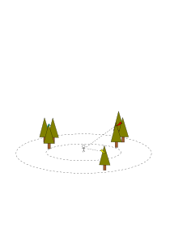Point Count Data
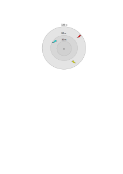Automatic Point Count
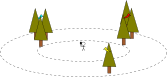Signal Classification
\[ X = \{(y_i, x_i)\}, i=1, \dots, N \]
\[ w = \arg\min_{w} \sum_{(y, x) \in X} loss(f(x), f_w(x)) \]
Feature Extraction
- Reduce the size of the input
- Trade-off between separability and contraction
\[ \Phi(x) \neq \Phi(x') \text{ if } f(x) \neq f(x') \]
Feature Extraction
\[
\begin{aligned}
\text{if } & \Phi((x, y)) = x \text{ and } f((x, y)) = y \\
\text{ then } & f((3, 1)) \neq f((3, 2)) \\
\text{ but } & \Phi((3, 1)) = \Phi((3, 2)) \\
\end{aligned}
\]
Separate Signal and Noise
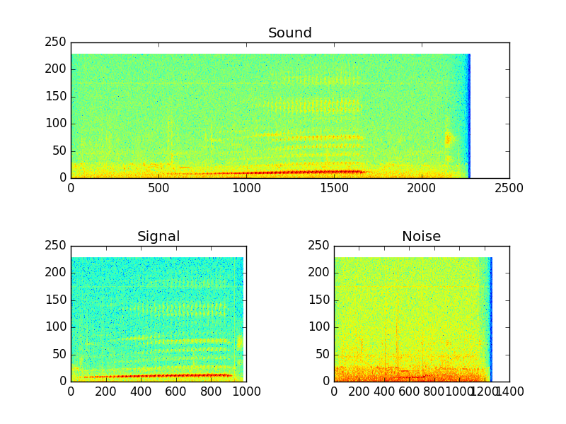Data Augmentation: Same Class
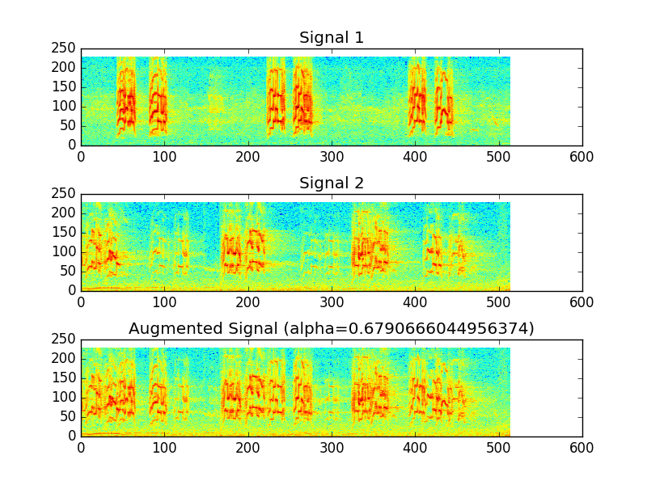Data Augmentation: Noise
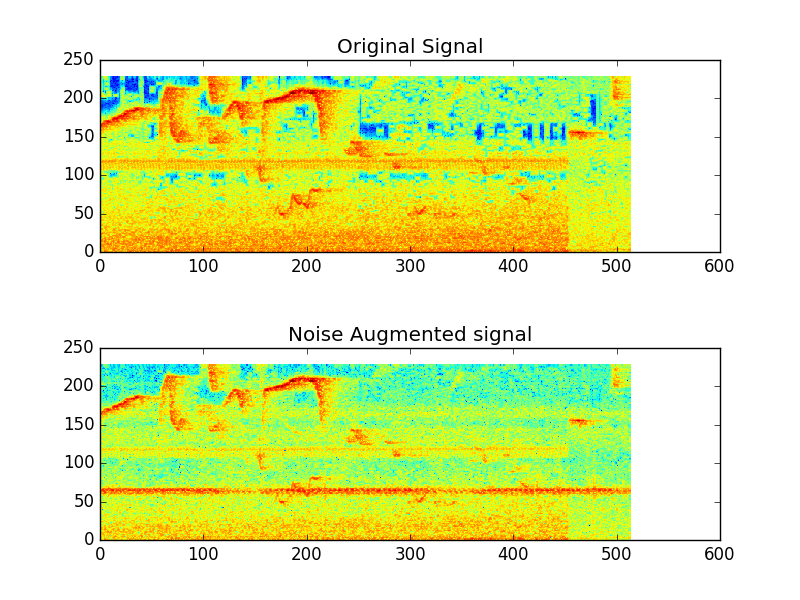Feature Extraction
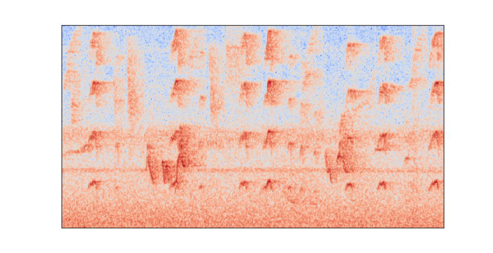Convolutional Neural Network

Goal of the Thesis
- Goal: Improve upon the state-of-the-art baseline
- New convolutional neural network architecture
- New data augmentation technique
- Meta-data fusion
- Question: Can these techniques be used to improve classification accuracy?
Network architecture: deep residual neural networks
- Introduce shortcuts
- Allow training of very deep networks
Shortcut
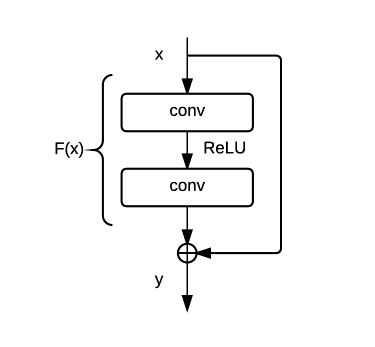
\[ y = \mathcal{H}(x) = \mathcal{F}(x) + x \]
Data augmentation: Multiple-width frequency-delta
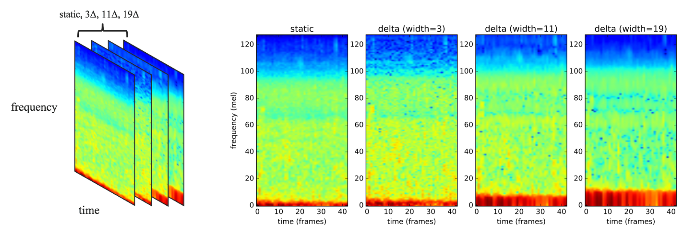Image source: Yoonchang Han and Kyogu Lee. Acoustic scene classification using convolutional neural network and multiple-width frequency-delta data augmentation. 14(8):1–11, 2016
Meta-data fusion
\[
Pr(bird_j|elevation, song) = \\
\frac{Pr(bird_j|song)Pr(elevation|bird_j)}
{\sum_{i=1}^n Pr(bird_i|song)Pr(elevation|bird_i)}
\]
Pseudo probability
\[Pr(bird_j | song) \]
Elevation likelihood
\[Pr(elevation | bird_j) \]
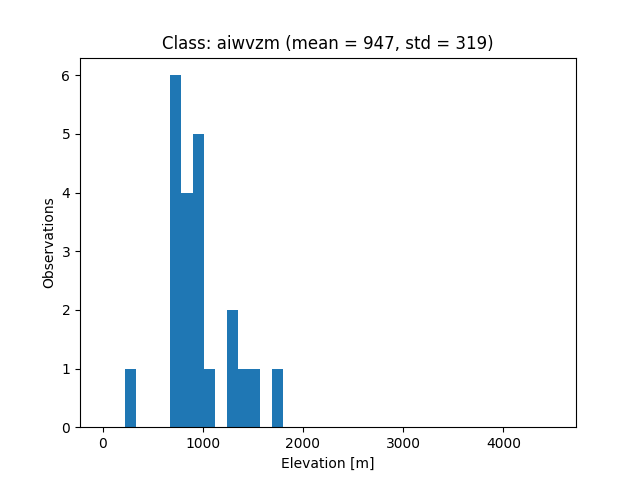
Elevation likelihood
\[Pr(elevation | bird_j) \]
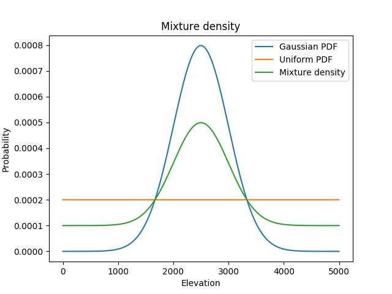